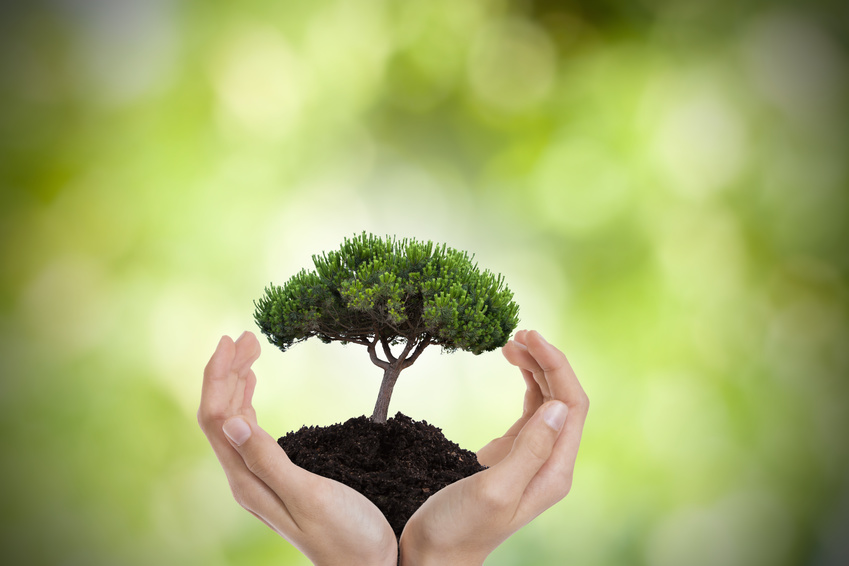

Hey my name is yasmine i'm 16 so exited to see my first litlle project
introduction
Environment is a place where different things are such as a swampy or hot environment. It can be living (biotic)
or
non-living (abiotic) things. It includes physical, chemical and other natural forces. Living things live in their
environment. They constantly interact with it and adapt themselves to conditions in their environment. In the
environment there are different interactions between animals, plants, soil, water, and other living and non-living
things.
Pollution, also called environmental pollution, the addition of any substance (solid, liquid, or gas) or any form
of
energy (such as heat, sound, or radioactivity) to the environment at a rate faster than it can be dispersed,
diluted, decomposed, recycled, or stored in some harmless form. The major kinds of pollution, usually classified
by
environment, are air pollution, water pollution, and land pollution. Modern society is also concerned about
specific
types of pollutants, such as noise pollution, light pollution, and plastic pollution. Pollution of all kinds can
have negative effects on the environment and wildlife and often impacts human health and well-being.

Causes of Environmental Degradation>
Some environmental life species require substantial areas to help provide food, living space, and other
different
assets. These creatures are called area specific.
At the point when the biome is divided, the vast patches of living space don’t exist anymore. It becomes more
troublesome for the wildlife to get the assets they need in order to survive. The environment goes on, even
though
the
animals and plant life are not there to help sustain it properly.